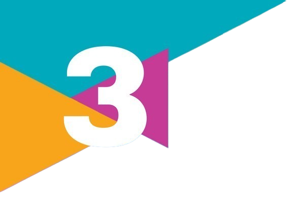

PORTAL SOCIOLOGIA
Um projeto de monitoria online
Buscar
Pergunte ao
Livro
UNIDADE 1
UNIDADE 2
UNIDADE 3
CAPÍTULOS
SLIDES
QUESTOES
ENEM
DOWNLOAD

UNIDADE 3
Deixamos para esta última unidade reflexões sociológicas que representam grandes desafios atuais para a humanidade e para o nosso país: os problemas urbanos e do campo, a questão da violência, do racismo, das desigualdades de gênero, da diversidade sexual e dos povos indígenas. Certamente você já deve ter se envolvido em alguns desses debates e reflexões. Quais são as grandes questões de sua cidade? Se você ou sua família vivem no campo, quais problemas enfrentam? Já refletiu sobre as desigualdades raciais e as desigualdades entre mulheres e homens? E sobre as diferentes orientações sexuais? Qual é o seu conhecimento sobre a cultura e a vida dos povos indígenas brasileiros?
Unidade 3
Desafios atuais
A questão urbana
A questão da terra
Violência e desigualdades sociais
Desnaturalizando as desigualdades raciais
Patriarcado e relações de gênero
Diversidade sexual e de gênero
Povos indígenas no Brasil